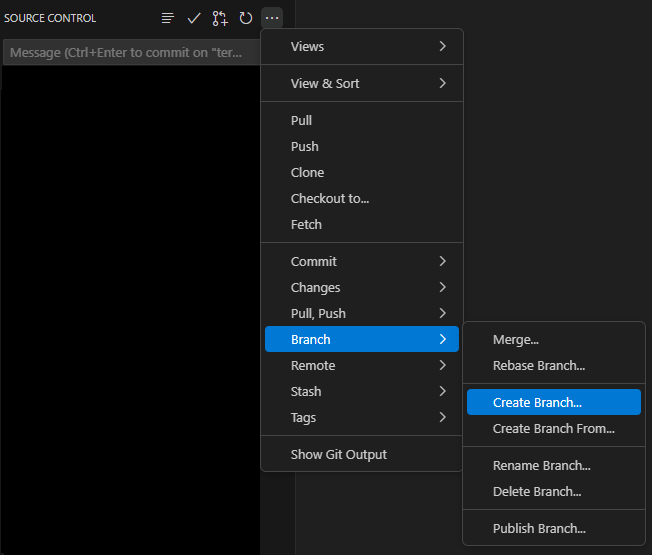
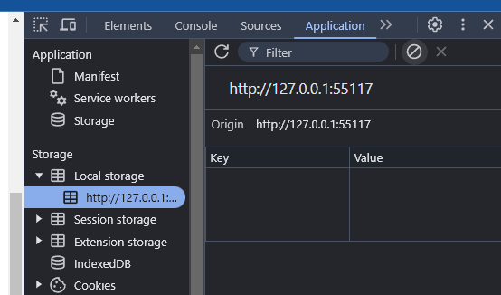

Atividade Individual S01: Adicionar Item ao Carrinho
Visão Geral
O curso usará um Trello quadro para gerenciar o projeto da equipe. Esta atividade pressupõe que:
- você já criou uma conta no Trello a partir da atividade de configuração das ferramentas do curso atividade
- sua equipe fez uma cópia de equipe do SleepOutside quadro do projeto do
Trello.
Este será o seu quadro compartilhado para trabalhar ao longo do bloco
Há algumas tarefas marcadas como "Team Activity" e outras
que não estão. A cada semana, a equipe deve concluir a atividade de equipe apropriada junta até
quinta-feira. Cada membro da equipe concluirá dois (2) cartões adicionais do projeto a cada semana. Estes devem ser
feitos individualmente o máximo possível, mas lembre-se de que você tem uma equipe para ajudá-lo se você
ficar preso em uma tarefa específica.
Instruções da Atividade
Cada membro da equipe deve trabalhar neste mesmo cartão do Trello apenas esta semana para praticar o fluxo de trabalho.
A atividade usará a "Add item to cart broken" tarefa.
Esta é em grande parte uma tarefa de depuração e solução de problemas, mas ajudará a se familiarizar com o código fornecido.
Trello
- Faça login no trello.com.
- Abra a cópia da sua equipe do quadro do Trello SleepOutside.
- Adicione a si mesmo à
"Add item to cart broken"tarefa. - Mova o cartão para a
"Doing"lista no Trello se o cartão ainda não tiver sido movido por um dos membros da sua equipe. - Leia os detalhes do cartão.
Orientação e Revisão de Código
- No VS Code, abra o repositório do projeto no GitHub da sua equipe que sua equipe configurou na atividade de equipe desta semana.
A maior parte do trabalho que você fará durante a primeira metade do curso será neste repositório compartilhado.
- Faça pull de quaisquer alterações do repositório de projeto da sua equipe antes de prosseguir.
- Crie uma nova branch chamada
yourinitials--individual1.
Criando uma Nova Branch Certifique-se de usar suas próprias iniciais no
yourinitialssegmento do nome da branch. - Examine o código para se orientar com a estrutura do projeto.
- Inicie o servidor de desenvolvimento no navegador.
npm run start - Em seu navegador, tente adicionar um item ao carrinho. Observe que nada parece acontecer quando você olha para o carrinho.
- Abra as ferramentas de desenvolvedor do navegador e verifique se há erros.
- Vá para o painel aplicação na janela das ferramentas de desenvolvedor (DevTools) e clique no menu suspenso Armazenamento local na área de armazenamento. Observe o conteúdo nos pares Chave—Valor.

Painel de Aplicação – Armazenamento Local no DevTools O código armazena o conteúdo do carrinho dentro do localStorage.
- Com este painel aberto, tente adicionar outro item ao carrinho de compras na aplicação.
Observe o que acontece com o localStorage.Dica
Apenas o objeto mais recente é gravado no localStorage, sobrescrevendo a adição anterior ao carrinho.
Depurar
- Depure o código para descobrir o que está errado e corrigi-lo.
Dicas
- Preste muita atenção ao erro no console, mas esteja ciente de que o local onde o erro é capturado nem sempre é onde o problema está realmente localizado.
- Defina pontos de interrupção para parar a execução do código e inspecioná-lo.
No DevTools Sources painel -> clique no arquivo JS de origem -> clique no número da linha onde deseja definir o ponto de interrupção -> recarregue a página para invocar o ponto de interrupção.
- À medida que você explora o código, você encontrará a função
addProductToCart. Preste atenção ao que ela está fazendo. O que fazsetLocalStorage?Dica
O que é necessário para armazenar múltiplos objetos no localStorage como dados?
Exemplo de Solução
A solução de exemplo é fornecida como referência depois de você tentar realizar a atividade. NÃO abra o exemplo de solução até ter trabalhado nesta atividade. Use-o para ajudar a concluir seu próprio código.
Exemplo de Solução
A solução de exemplo pode ser encontrada no diretório src: Repositório do Sleep Outside do WDD 330 week1 branch.Pull Request
- No VS Code, complete as correções de código para corrigir a operação do carrinho.
- Teste se o carrinho está funcionando localmente.
- Faça o lint e a formatação do seu código.
>npm run lint>npm run format - Faça o commit e envie suas alterações para o GitHub.
- Envie um pull request para este branch.
Normalmente, seu pull request seria revisado por outro membro da equipe e mesclado de volta ao branch principal; neste caso, no entanto, há mais de um branch que resolveu o mesmo problema. Mescle apenas o único branch de volta para o
mainbranch. - Discuta com sua equipe qual branch você deseja manter e peça para um membro da equipe mesclar esse pull request. As outras requisições podem ser fechadas sem mesclar.
- Não há problema em Excluir o branch que você criou em seu repositório local.
- Um membro da equipe deve mover o cartão Add Item to Cart Broken do Trello para a coluna "Done".
Revise o Processo de Desenvolvimento e Implantação
A partir de agora, você deve seguir este processo em cada uma das tarefas do Trello que concluir ao longo do curso. Você pode querer copiar ou consultar essas etapas de tarefas para referência futura até que se torne um hábito.
- Escolha um cartão do Trello, atribua-o a você mesmo e mova-o para "Doing".
- Puxe quaisquer alterações do projeto da sua equipe.
- Crie um branch.
- Conclua o trabalho.
- Faça o lint e a formatação do código.
- Faça o commit e envie.
- Crie um pull request para o seu novo branch.
- Avise sua equipe que há um pull request aguardando.
- Outro membro da equipe deve revisar o pull request no GitHub e, se tudo estiver certo, mesclar a requisição.
- Exclua o branch antigo.
- Mova o cartão do Trello para a lista "Done".